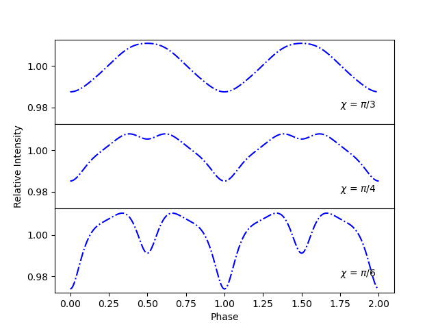

Prepare lightcurves for different neutron star orientations¶
Here we model lightcurves, with various values of ‘chi’ and ‘inclination’, in an attempt to show how the orientation between the magnetic axis, spin axis, and the observer changes the relative intensity.
See lcurve for more details on how to produce lightcurves produced by two opposite hotspots.
We again import Magpies and numpy, math and matplotlib
packages.
from magpies import *
from atmos import *
import numpy as np
from math import *
import matplotlib.pyplot as plt
We initialise basic neutron stars properties.
Rns = 10 ## km
Mns = 1.8 ## M_solar
Further we create a surface thermal map which is filled with zeros and place two hot spots at opposite locations with temperature \(T = 10^6\) K.
Tm = Tmap (usage='zero') ## Surface thermal map filled with zeros
Tm.Ts[0, int(len(Tm.theta)/2)] = 1e6 ## First hot spot located at phi = 0, theta = pi/2
Tm.Ts[int(len(Tm.phi)/2), int(len(Tm.theta)/2)] = 1e6 ## Second antipodal hot spot, phi = pi, theta = pi/2
Next, we create an array where we store all rotational phases.
phases = np.linspace (0, 4*pi, 400) ## Phases where we compute the lightcurve
phase = np.asarray(phases) / pi / 2 ## Converting phase angle to phase
Now we need to define the desired values of chi and the inclination. We will produce 3 plots, each with a different value for chi. On each plot we will have 3 curves corresponding to the values of the inclination.
chi=[pi/3,pi/4,pi/6]
inclination=[pi/2,pi/3,pi/6]
We use these values to create a vector, whos values will by lists of the relative intensitys for the various orientations.
intensity=[]
for i in range(3):
for j in range(3):
intens = lightcurve (Tm, Rns, Mns, phases, chi[i], inclination[j]) ##Uses the 'chi' and 'inclination' angles to calculate intensity
inten = np.asarray(intens) / np.mean(intens) ##Transforming to absolute values
intensity.append(inten)
We use these values to plot our subplots.
fig, axs = plt.subplots(3,sharex=True,sharey=True) ##Creates a subplot with 3 plots, all 3 plots will share x and y axis
st=['r--', 'b-.','k:','r--', 'b-.','k:','r--', 'b-.','k:'] ##Defines the line types
for i in range(9): ##Plots each curve
if i<3:
axs[0].plot (phase, intensity[i], st[i]) ##Subplot 1
elif i>5:
axs[2].plot (phase, intensity[i], st[i]) ##Subplot 3
else :
axs[1].plot (phase, intensity[i], st[i]) ##Subplot 2
plt.subplots_adjust(hspace=.0) ##This merges the plots
axs[0].text(1.75, 0.94, '$\chi$ = $\pi$/3')
axs[1].text(1.75, 0.94, '$\chi$ = $\pi$/4')
axs[2].text(1.75, 0.94, '$\chi$ = $\pi$/6')
plt.legend(["$\pi$/2", "$\pi$/3", "$\pi$/6"],loc='lower left')
axs[1].set_ylabel('Relative Intensity')
axs[2].set_xlabel('Phase')
This method can be adjusted to compare any number of lightcurves, for various chi or inclination. For example, the code below will create 3 plots for various chi, but holds the inclination constant at pi/2.
chi=[pi/3,pi/4,pi/6]
inclination=[pi/2]
intensity=[]
for i in range(3):
for j in range(3):
intens = lightcurve (Tm, Rns, Mns, phases, chi[i], inclination)
inten = np.asarray(intens) / np.mean(intens)
intensity.append(inten)
fig, axs = plt.subplots(3,sharex=True,sharey=True)
for i in range(9): ##Plots each curve
if i<3:
axs[0].plot (phase, intensity[i],'b-.')
elif i>5:
axs[2].plot (phase, intensity[i],'b-.')
else:
axs[1].plot (phase, intensity[i],'b-.')
axs[0].text(1.75, 0.98, '$\chi$ = $\pi$/3')
axs[1].text(1.75, 0.98, '$\chi$ = $\pi$/4')
axs[2].text(1.75, 0.98, '$\chi$ = $\pi$/6')
plt.subplots_adjust(hspace=.0)
axs[1].set_ylabel('Relative Intensity')
axs[2].set_xlabel('Phase')
Thus will give the following graph.
